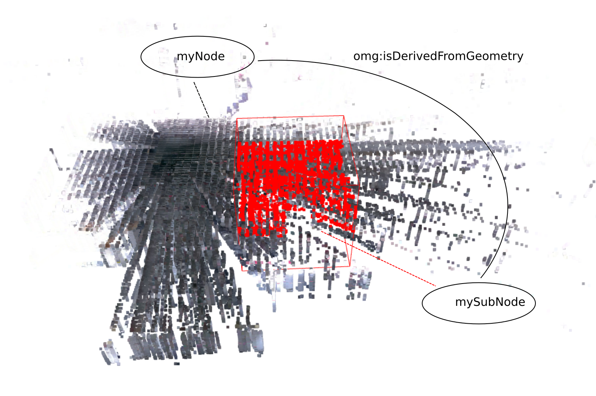
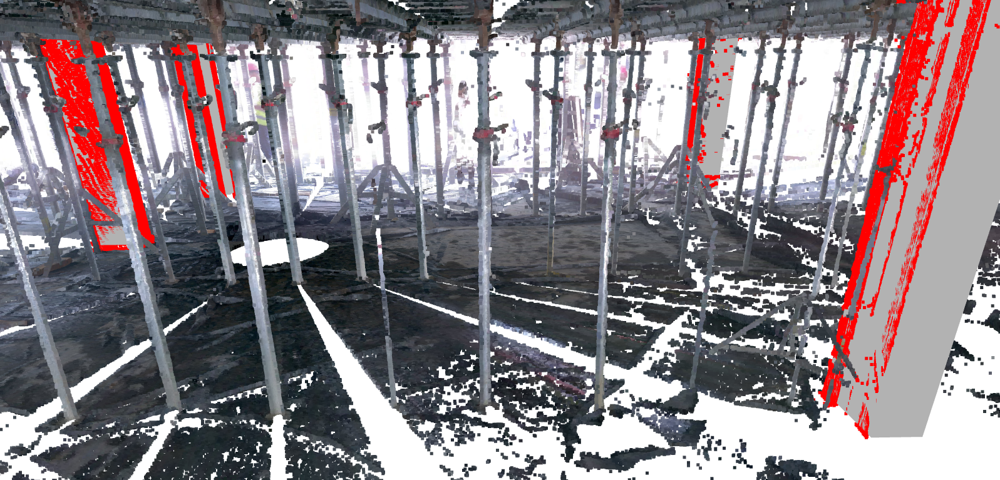

PointCloudNode
The PointCloudNode class in Geomapi represents the data and metadata of point cloud data. The data itself and methods build upon Open3D PointCloud concepts while the metadata builds upon the RDFlib framework:
http://www.open3d.org/docs/release/python_api/open3d.geometry.PointCloud.html
https://rdflib.readthedocs.io/
The code below shows how to create a PointCloudNode from various inputs.
#IMPORT PACKAGES
from rdflib import Graph, URIRef, Literal
import open3d as o3d
import os
from pathlib import Path
#IMPORT MODULES
from context import geomapi
from geomapi.nodes import *
import geomapi.utils as ut
from geomapi.utils import geometryutils as gmu
import geomapi.tools as tl
%load_ext autoreload
The autoreload extension is already loaded. To reload it, use:
%reload_ext autoreload
%autoreload 2
PointCloudNode from properties
A placeholder PointCloudNode can be initialised without any data or metadata
node=PointCloudNode(subject='myNode',
name='myName')
{key:value for key, value in node.__dict__.items() if not key.startswith('__') and not callable(key)}
{'_e57Index': 0,
'pointCount': None,
'_cartesianBounds': None,
'_orientedBounds': None,
'_orientedBoundingBox': None,
'_subject': rdflib.term.URIRef('file:///myNode'),
'_graph': None,
'_graphPath': None,
'_path': None,
'_name': 'myName',
'_timestamp': None,
'_resource': None,
'_cartesianTransform': None}
PointCloudNode from Path
Instead, it is much more likely to initialise a PointCloudNode from a path containing an .pcd or .e57 file. This sets the:
subject
name
timestamp
filePath=os.path.join(Path(os.getcwd()).parents[2],'test','testfiles','PCD','academiestraat week 22 a 20.pcd')
node=PointCloudNode(path=filePath)
{key:value for key, value in node.__dict__.items() if not key.startswith('__') and not callable(key)}
{'_e57Index': 0,
'pointCount': None,
'_cartesianBounds': None,
'_orientedBounds': None,
'_orientedBoundingBox': None,
'_subject': rdflib.term.URIRef('file:///academiestraat_week_22_a_20'),
'_graph': None,
'_graphPath': None,
'_path': 'd:\\Scan-to-BIM repository\\geomapi\\test\\testfiles\\PCD\\academiestraat week 22 a 20.pcd',
'_name': 'academiestraat week 22 a 20',
'_timestamp': '2022-08-02T08:25:02',
'_resource': None,
'_cartesianTransform': None}
PointCloudNode from E57 file
For E57 files, the header is parsed so significantly more metadata can be extracted without loading in the actual data.
filePath=os.path.join(Path(os.getcwd()).parents[2],'test','testfiles','PCD','week 22 - Lidar.e57')
node=PointCloudNode(path=filePath)
{key:value for key, value in node.__dict__.items() if not key.startswith('__') and not callable(key)}
{'_e57Index': 0,
'pointCount': 11936498,
'_cartesianBounds': array([-36.77039719, 44.17316818, 61.75132751, 112.70298767,
1.28037024, 10.4529705 ]),
'_orientedBounds': None,
'_orientedBoundingBox': None,
'_subject': rdflib.term.URIRef('file:///academiestraat_week_22_20'),
'_graph': None,
'_graphPath': None,
'_path': 'd:\\Scan-to-BIM repository\\geomapi\\test\\testfiles\\PCD\\week 22 - Lidar.e57',
'_name': 'academiestraat week 22 20',
'_timestamp': '2022-08-02T08:25:15',
'_resource': None,
'_cartesianTransform': array([[-4.32203630e-01, 9.01764516e-01, 4.55851494e-03,
5.10162327e-01],
[-9.01695863e-01, -4.32092277e-01, -1.55188352e-02,
8.75119260e+01],
[-1.20246358e-02, -1.08176910e-02, 9.99869184e-01,
4.74824153e+00],
[ 0.00000000e+00, 0.00000000e+00, 0.00000000e+00,
1.00000000e+00]])}
NOTE: Unless e57Index is specified, the first scan in the e57 file is retained.
PointCloudNode from E57 XML file
Analogue, the same information can be extracted from e57 xml files. These files are generated from e57 files by e57xmldump.exe
filePath=os.path.join(Path(os.getcwd()).parents[2],'test','testfiles','PCD','week 22 - Lidar.xml')
node=PointCloudNode(path=filePath)
{key:value for key, value in node.__dict__.items() if not key.startswith('__') and not callable(key)}
{'_e57Index': 0,
'pointCount': 1000000,
'_cartesianBounds': array([-4.35110378, 31.89645767, -6.84530544, 21.42576599, -1.5266 ,
4.38528442]),
'_orientedBounds': None,
'_orientedBoundingBox': None,
'_subject': rdflib.term.URIRef('file:///week_22_-_Lidar'),
'_graph': None,
'_graphPath': None,
'_path': 'd:\\Scan-to-BIM repository\\geomapi\\test\\testfiles\\PCD\\week 22 - Lidar.xml',
'_name': 'week 22 - Lidar_0',
'_timestamp': '2022-08-17T09:15:09',
'_resource': None,
'_cartesianTransform': array([[-3.99988529e-01, -9.16520103e-01, -2.77684704e-04,
3.79711752e-01],
[-9.16520136e-01, 3.99988550e-01, -2.33828576e-05,
1.30182122e+01],
[ 1.32501561e-04, 2.45150748e-04, -9.99999961e-01,
3.69457244e-02],
[ 0.00000000e+00, 0.00000000e+00, 0.00000000e+00,
1.00000000e+00]])}
PointCloudNode with getResource
NOTE: GetResource is optional and might slow down any analysis. Only work with data when all metadata options have been exhausted.
E.g.: This 11M point cloud takes 11s to import while its metadata variant is initialised within 0.2s. Especially with E57 files, where there is so much metadata already present, this is a major computational burden.
filePath=os.path.join(Path(os.getcwd()).parents[2],'test','testfiles','PCD','academiestraat week 22 a 20.pcd')
node=PointCloudNode(path=filePath, getResource=True)
{key:value for key, value in node.__dict__.items() if not key.startswith('__') and not callable(key)}
{'_e57Index': 0,
'pointCount': 11936498,
'_cartesianBounds': array([-36.77039719, 44.17316818, 61.75132751, 112.70298767,
1.28037024, 10.4529705 ]),
'_orientedBounds': array([[-27.59671761, 51.72761543, -1.25327158],
[ 49.06238386, 63.57009377, -2.84643678],
[-36.96459257, 113.19129453, 4.86625159],
[-27.30329385, 50.94547305, 7.05164109],
[ 39.98793266, 124.25163049, 11.57799906],
[-36.67116881, 112.40915215, 13.17116426],
[ 49.35580762, 62.78795139, 5.45847589],
[ 39.6945089 , 125.03377287, 3.27308639]]),
'_orientedBoundingBox': OrientedBoundingBox: center: (6.19561, 87.9896, 5.16236), extent: 77.5848, 62.4739, 8.34682),
'_subject': rdflib.term.URIRef('file:///academiestraat_week_22_a_20'),
'_graph': None,
'_graphPath': None,
'_path': 'd:\\Scan-to-BIM repository\\geomapi\\test\\testfiles\\PCD\\academiestraat week 22 a 20.pcd',
'_name': 'academiestraat week 22 a 20',
'_timestamp': '2022-08-02T08:25:02',
'_resource': PointCloud with 11936498 points.,
'_cartesianTransform': array([[ 1. , 0. , 0. , 0.58767088],
[ 0. , 1. , 0. , 87.49782357],
[ 0. , 0. , 1. , 5.07468233],
[ 0. , 0. , 0. , 1. ]])}

PointCloudNode from resource
A similar result is achieved by initialising a PointCloudNode from a Open3D.Geometry.PointCloud or E57 instance. In this case, GetResource (bool) means nothing.
filePath=os.path.join(Path(os.getcwd()).parents[2],'test','testfiles','PCD','academiestraat week 22 a 20.pcd')
pcd=o3d.io.read_point_cloud(filePath)
node=PointCloudNode(resource=pcd)
{key:value for key, value in node.__dict__.items() if not key.startswith('__') and not callable(key)}
{'_e57Index': 0,
'pointCount': 11936498,
'_cartesianBounds': array([-36.77039719, 44.17316818, 61.75132751, 112.70298767,
1.28037024, 10.4529705 ]),
'_orientedBounds': array([[-27.59671761, 51.72761543, -1.25327158],
[ 49.06238386, 63.57009377, -2.84643678],
[-36.96459257, 113.19129453, 4.86625159],
[-27.30329385, 50.94547305, 7.05164109],
[ 39.98793266, 124.25163049, 11.57799906],
[-36.67116881, 112.40915215, 13.17116426],
[ 49.35580762, 62.78795139, 5.45847589],
[ 39.6945089 , 125.03377287, 3.27308639]]),
'_orientedBoundingBox': OrientedBoundingBox: center: (6.19561, 87.9896, 5.16236), extent: 77.5848, 62.4739, 8.34682),
'_subject': rdflib.term.URIRef('file:///58d62ae0-1dfe-11ed-8a65-c8f75043ce59'),
'_graph': None,
'_graphPath': None,
'_path': None,
'_name': '58d62ae0-1dfe-11ed-8a65-c8f75043ce59',
'_timestamp': None,
'_resource': PointCloud with 11936498 points.,
'_cartesianTransform': array([[ 1. , 0. , 0. , 0.58767088],
[ 0. , 1. , 0. , 87.49782357],
[ 0. , 0. , 1. , 5.07468233],
[ 0. , 0. , 0. , 1. ]])}
NOTE: The cartesianTransform extracted from resources are void of rotationmatrices as this metadata is not part of the fileformat. The translation thus represents the center of the geometry.
PointCloudNode from e57 instance
import pye57
filePath=os.path.join(Path(os.getcwd()).parents[2],'test','testfiles','PCD','week22 photogrammetry - Cloud.e57')
e57 = pye57.E57(filePath)
node=PointCloudNode(resource=e57)
{key:value for key, value in node.__dict__.items() if not key.startswith('__') and not callable(key)}
{'_e57Index': 0,
'pointCount': 242750,
'_cartesianBounds': array([-37.36532974, 106.94235229, 16.87863541, 130.69406128,
0.71651864, 23.73304749]),
'_orientedBounds': array([[-1.96025758e+01, 1.65884155e+02, 2.22874746e+01],
[ 1.22465470e+02, 1.23859440e+02, 2.29468276e+01],
[-5.26111779e+01, 5.43129133e+01, 2.33762930e+01],
[-1.95654774e+01, 1.65648750e+02, -7.09825603e-01],
[ 8.94939663e+01, 1.20527928e+01, 1.03834566e+00],
[-5.25740795e+01, 5.40775081e+01, 3.78992731e-01],
[ 1.22502568e+02, 1.23624035e+02, -5.04726756e-02],
[ 8.94568679e+01, 1.22881979e+01, 2.40356459e+01]]),
'_orientedBoundingBox': OrientedBoundingBox: center: (34.9457, 88.9685, 11.6629), extent: 148.155, 116.357, 22.9985),
'_subject': rdflib.term.URIRef('file:///26e1ed26-1dff-11ed-832f-c8f75043ce59'),
'_graph': None,
'_graphPath': None,
'_path': None,
'_name': '26e1ed26-1dff-11ed-832f-c8f75043ce59',
'_timestamp': None,
'_resource': PointCloud with 242750 points.,
'_cartesianTransform': array([[ 1. , 0. , 0. , 28.03427131],
[ 0. , 1. , 0. , 72.25597195],
[ 0. , 0. , 1. , 4.47910446],
[ 0. , 0. , 0. , 1. ]])}
PointCloudNode from Graph and graphPath
If a point cloud was already serialized, a node can be initialised from the graph or graphPath.
NOTE: The graphPath is the more complete option as it is used to absolutize the node’s path information. However, it is also the slower option as the entire graph encapsulation the node is parsed multiple times.
USE: linkeddatatools.graph_to_nodes resolves this issue.
graphPath = os.path.join(Path(os.getcwd()).parents[2],'test','testfiles','pcdGraph.ttl')
graph=Graph().parse(graphPath)
#only print first node
newGraph=Graph()
newGraph=ut.bind_ontologies(newGraph)
newGraph+=graph.triples((URIRef('file:///_65FBBFC3-1192-47C2-BCC1-B2BF66840C4A_-Cloud-1'),None,None))
print(newGraph.serialize())
@prefix e57: <http://libe57.org#> .
@prefix openlabel: <https://www.asam.net/index.php?eID=dumpFile&t=f&f=3876&token=413e8c85031ae64cc35cf42d0768627514868b2f#> .
@prefix v4d: <https://w3id.org/v4d/core#> .
@prefix xsd: <http://www.w3.org/2001/XMLSchema#> .
<file:///_65FBBFC3-1192-47C2-BCC1-B2BF66840C4A_-Cloud-1> a v4d:PointCloudNode ;
e57:cartesianBounds """[-14.56856251 18.11331177 -16.01319885 15.32858181 -1.11594343\r
15.32411003]""" ;
e57:cartesianTransform """[[1. 0. 0. 0.]\r
[0. 1. 0. 0.]\r
[0. 0. 1. 0.]\r
[0. 0. 0. 1.]]""" ;
e57:e57Index 0 ;
e57:pointCount 20168806 ;
v4d:name "{65FBBFC3-1192-47C2-BCC1-B2BF66840C4A}-Cloud-1" ;
v4d:orientedBounds """[[-13.47140023 -17.40796858 -0.17794121]\r
[ 19.16010023 -15.45181523 -1.25154832]\r
[-15.44981412 13.51956681 -3.95922326]\r
[-13.02567042 -15.24017258 17.31949716]\r
[ 17.62741617 17.64351618 12.46460799]\r
[-15.0040843 15.68736282 13.5382151 ]\r
[ 19.60583005 -13.28401922 16.24589004]\r
[ 17.18168635 15.47572017 -5.03283037]]""" ;
v4d:path "PCD\\navvis.e57" ;
openlabel:timestamp "2022-07-25 10:26:49" .
node=PointCloudNode(graphPath=graphPath)
{key:value for key, value in node.__dict__.items() if not key.startswith('__') and not callable(key)}
{'_e57Index': 0,
'pointCount': 20168806,
'_cartesianBounds': array([-14.56856251, 18.11331177, -16.01319885, 15.32858181,
-1.11594343, 15.32411003]),
'_orientedBounds': array([[-13.47140023, -17.40796858, -0.17794121],
[ 19.16010023, -15.45181523, -1.25154832],
[-15.44981412, 13.51956681, -3.95922326],
[-13.02567042, -15.24017258, 17.31949716],
[ 17.62741617, 17.64351618, 12.46460799],
[-15.0040843 , 15.68736282, 13.5382151 ],
[ 19.60583005, -13.28401922, 16.24589004],
[ 17.18168635, 15.47572017, -5.03283037]]),
'_orientedBoundingBox': None,
'_subject': rdflib.term.URIRef('file:///_65FBBFC3-1192-47C2-BCC1-B2BF66840C4A_-Cloud-1'),
'_graph': <Graph identifier=N23cf548e77ad47fe98f9a262c673613f (<class 'rdflib.graph.Graph'>)>,
'_graphPath': 'd:\\Scan-to-BIM repository\\geomapi\\test\\testfiles\\pcdGraph.ttl',
'_path': 'd:\\Scan-to-BIM repository\\geomapi\\test\\testfiles\\PCD\\navvis.e57',
'_name': '{65FBBFC3-1192-47C2-BCC1-B2BF66840C4A}-Cloud-1',
'_timestamp': '2022-07-25T10:26:49',
'_resource': None,
'_cartesianTransform': array([[1., 0., 0., 0.],
[0., 1., 0., 0.],
[0., 0., 1., 0.],
[0., 0., 0., 1.]]),
'type': 'https://w3id.org/v4d/core#PointCloudNode'}
PointCloudNode to Graph
The Graph serialisation is inherited from Node functionality.
node=PointCloudNode(subject='myNode',
path=filePath,
getResource=True)
newGraphPath = os.path.join(os.getcwd(),'myGraph.ttl')
node.to_graph(newGraphPath)
newNode=Node(graphPath=newGraphPath)
print(node.graph.serialize())
@prefix e57: <http://libe57.org#> .
@prefix openlabel: <https://www.asam.net/index.php?eID=dumpFile&t=f&f=3876&token=413e8c85031ae64cc35cf42d0768627514868b2f#> .
@prefix v4d: <https://w3id.org/v4d/core#> .
@prefix xsd: <http://www.w3.org/2001/XMLSchema#> .
<file:///week22_photogrammetry_-_Cloud> a v4d:PointCloudNode ;
e57:cartesianBounds """[-37.36532974 106.94235229 16.87863541 130.69406128 0.71651864
23.73304749]""" ;
e57:cartesianTransform """[[ 1. 0. 0. 28.03427131]
[ 0. 1. 0. 72.25597195]
[ 0. 0. 1. 4.47910446]
[ 0. 0. 0. 1. ]]""" ;
e57:e57Index 0 ;
e57:pointCount 242750 ;
v4d:name "week22 photogrammetry - Cloud" ;
v4d:orientedBounds """[[-1.96025758e+01 1.65884155e+02 2.22874746e+01]
[ 1.22465470e+02 1.23859440e+02 2.29468276e+01]
[-5.26111779e+01 5.43129133e+01 2.33762930e+01]
[-1.95654774e+01 1.65648750e+02 -7.09825603e-01]
[ 8.94939663e+01 1.20527928e+01 1.03834566e+00]
[-5.25740795e+01 5.40775081e+01 3.78992731e-01]
[ 1.22502568e+02 1.23624035e+02 -5.04726756e-02]
[ 8.94568679e+01 1.22881979e+01 2.40356459e+01]]""" ;
v4d:path "..\\..\\..\\test\\testfiles\\PCD\\week22 photogrammetry - Cloud.e57" ;
openlabel:timestamp "2022-08-02T08:25:27" .
PointCloudNode prefix relations
PointCloudNodes can be attributed with a range of relationships. This is extremely usefull for Graph navigation and linking together different resources. In Semantic Web Technologies, relationships are defined by triples that have other subjects as literals.
In this first example, we perform a subselection on a node based on the omg.isDerivedFromGeometry relation.
myNode=PointCloudNode(subject='file:///academiestraat_week_22_a_20',graphPath=graphPath, getResource=True)
print(myNode.resource)
PointCloud with 11936498 points.
#croppingGeometry
box=o3d.geometry.TriangleMesh.create_box(width=10, height=10, depth=10)
box=box.get_oriented_bounding_box()
box.translate([7,77,0])
box.color=[1,0,0]
croppedGeometry=myNode.resource.crop(box)
print(croppedGeometry)
PointCloud with 63856 points.

subNode=PointCloudNode(subject='mySubNode',
resource=croppedGeometry,
isDerivedFromGeometry=myNode.subject)
subNode.to_graph()
print(subNode.graph.serialize())
@prefix e57: <http://libe57.org#> .
@prefix omg: <https://w3id.org/omg#> .
@prefix v4d: <https://w3id.org/v4d/core#> .
@prefix xsd: <http://www.w3.org/2001/XMLSchema#> .
<file:///mySubNode> a v4d:PointCloudNode ;
e57:cartesianBounds "[ 7.00004864 16.99991798 77.00058746 86.99999237 3.01331043 7.22578764]" ;
e57:cartesianTransform """[[ 1. 0. 0. 9.84694508]
[ 0. 1. 0. 83.50834556]
[ 0. 0. 1. 5.98616932]
[ 0. 0. 0. 1. ]]""" ;
e57:e57Index 0 ;
e57:pointCount 63856 ;
omg:isDerivedFromGeometry "file:///academiestraat_week_22_a_20" ;
v4d:orientedBounds """[[11.92503234 91.95077613 7.2293572 ]
[21.88910944 81.98219128 7.41400688]
[ 2.17810184 82.20761211 7.19474963]
[11.97234966 91.91866715 2.94256659]
[12.18949625 72.20691828 3.09260868]
[ 2.22541916 82.17550313 2.90795901]
[21.93642675 81.95008229 3.12721626]
[12.14217894 72.23902726 7.3793993 ]]""" .
PointCloudNode custom relationships
When designing a new analysis, there is often need for custom relations and properties. Both can be just asssigned as instance variables, which will be serialized by default under the v4d ontology.
import ifcopenshell
from ifcopenshell.util.selector import Selector
ifcPath=os.path.join(Path(os.getcwd()).parents[2],'test','testfiles','IFC','Academiestraat_parking.ifc')
ifc = ifcopenshell.open(ifcPath)
selector = Selector()
classes='.IfcColumn'
bimNodes=[]
for ifcElement in selector.parse(ifc, classes):
bimNodes.append(BIMNode(resource=ifcElement, ifcPath=ifcPath))
geometries=[node.resource for node in bimNodes if node.resource is not None]
myNode=PointCloudNode(subject='file:///academiestraat_week_22_a_20',graphPath=graphPath, getResource=True)
print(myNode.resource)
PointCloud with 11936498 points.
subCloud=gmu.crop_geometry_by_distance(myNode.resource, geometries, threshold=0.1)
print(subCloud)
PointCloud with 290245 points.

subNode=PointCloudNode(subject='mySubNode',
resource=croppedGeometry,
isDerivedFromGeometry=myNode.subject,
isDerivedFromIFC=ifcPath, #custom
ifcClass=classes,
offsetDistanceCalculation=0.1)
subNode.to_graph()
print(subNode.graph.serialize())
@prefix e57: <http://libe57.org#> .
@prefix omg: <https://w3id.org/omg#> .
@prefix v4d: <https://w3id.org/v4d/core#> .
@prefix xsd: <http://www.w3.org/2001/XMLSchema#> .
<file:///mySubNode> a v4d:PointCloudNode ;
e57:cartesianBounds "[ 7.00004864 16.99991798 77.00058746 86.99999237 3.01331043 7.22578764]" ;
e57:cartesianTransform """[[ 1. 0. 0. 9.84694508]
[ 0. 1. 0. 83.50834556]
[ 0. 0. 1. 5.98616932]
[ 0. 0. 0. 1. ]]""" ;
e57:e57Index 0 ;
e57:pointCount 63856 ;
omg:isDerivedFromGeometry "file:///academiestraat_week_22_a_20" ;
v4d:ifcClass ".IfcColumn" ;
v4d:isDerivedFromIFC "d:\\Scan-to-BIM repository\\geomapi\\test\\testfiles\\IFC\\Academiestraat_parking.ifc" ;
v4d:offsetDistanceCalculation "0.1"^^xsd:float ;
v4d:orientedBounds """[[11.92503234 91.95077613 7.2293572 ]
[21.88910944 81.98219128 7.41400688]
[ 2.17810184 82.20761211 7.19474963]
[11.97234966 91.91866715 2.94256659]
[12.18949625 72.20691828 3.09260868]
[ 2.22541916 82.17550313 2.90795901]
[21.93642675 81.95008229 3.12721626]
[12.14217894 72.23902726 7.3793993 ]]""" .
PointCloudNode with 3rd party ontologies
Additionally, 3rd party ontologies can be registered in the namespace of the node.graph and the relationship can be manually attached to the graph.
import rdflib
subNode=PointCloudNode(subject='mySubNode')
subNode.to_graph()
myOntology = rdflib.Namespace('http://myOntology#')
subNode.graph.bind('myOntology', myOntology)
subNode.graph.add((subNode.subject,myOntology['myProperty'],Literal(0.1) ))
subNode.graph.add((subNode.subject,myOntology['myRelation'],myNode.subject ))
print(subNode.graph.serialize())
@prefix e57: <http://libe57.org#> .
@prefix myOntology: <http://myOntology#> .
@prefix v4d: <https://w3id.org/v4d/core#> .
@prefix xsd: <http://www.w3.org/2001/XMLSchema#> .
<file:///mySubNode> a v4d:PointCloudNode ;
e57:e57Index 0 ;
myOntology:myProperty 1e-01 ;
myOntology:myRelation <file:///academiestraat_week_22_a_20> .